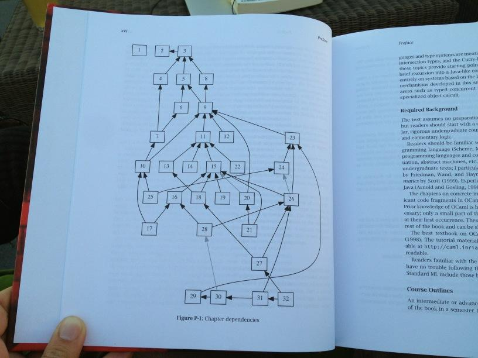

Reviewing the second edition by Martin Kleppmann. This is the first book I’m helping revise in a formal capacity!
Preface
- Preface should skip that entire first page (xiii) this doesn’t appear to add/contextualize anything
- Start with what data-intensive applications are (top of xiv) then provide examples
- If we want to include the driving forces list on xiii, this is a good place to move it
- “We call an application data-intensive if data is its primary challenge—the quantity of data, the complexity of data, or the speed at which it is changing—as opposed to compute-intensive, where CPU cycles are the bottleneck.”
- This is a key line that defines data-intensive applications. To me, this should reflect the majority of the contents of the book.
- Specifically: data replication and consistency should be emphasized more here! Especially after seeing that a good chunk of the book focuses on this.
- I don’t actually think ‘the speed at which it is changing’ is talked about at all in the book, maybe remove that part
- Would remove the comparison to compute-intensive, doesn’t seem to aid the definition.
- Love the part on why terminology and underlying principles are important — it’s true!
- Who should read this book section
- Axe first sentence of second paragraph
- Scope section
- References and further reading seem implied (and references are already mentioned in the scope section), we can probably axe
Big-picture Content
- Would love sections on tradeoffs in data storage!
- Also either directly preceding or after, there should be a section on latency tradeoffs (seems like this exists in the section on “Describing Performance” on page 54)
- e.g. deciding between hot/cold storage
- cost vs latency tradeoff
- factoring in speed of light when we talk about distances about how far data is away (e.g. cpu caches to memory to disk to network)
- caching as a means to move along the tradeoff spectrum
- maybe move section on systems of record and derived data here
- It felt like there were quite a few cases where terminology was used before it was defined, just a flag for some potential reordering of chapters/content.
- E.g. I feel like Chapter 1 should actually be much later, Chapter 2 seems more ‘fundamental’
- If we drew a dependency graph of what each chapter depends on, this could help us sort out book order better (e.g. Types and Programming Languages)
- 
Chapter 1
- I really like the clarity and writing style here already. It feels a lot more mature than the writing in the preface (though that’s likely because the preface hasn’t been updated)
- I feel like there’s a lot of duplication in the first few pages of the preface and the start of Chapter 1, we should just keep it in one place or the other
- Or have one of those animal markers that tell you to skip ahead to Chapter 1 if they want the definition of data-intensive, etc.!
- Bullet point list on p.21-22 probably needs to include zonal affinity (how do we make sure data is close to users)
- p.22 paragraph 1: glue also includes network requests!
- Maybe link to Distributed versus Single-Node systems
- Annotated diagram for OLTP vs OLAP access patterns would be more helpful than the table on p.25 I think.
- Confusing part about “Analytic systems are often only accessible to employees of the company that owns the data” (p.26)
- Paragraph feels disjoint, doesn’t add anything to the chapter, would just cut
- Data warehousing section, what caused the transition “for companies to stop using their OLTP systems for analytics purposes, and to run the analytics on a separate database system instead”? Adding historical context here would be really cool
- Link to stream processing in “Beyond the data lake”
- Section on Systems of record and derived data
- Fun quote to consider adding: “Never go to sea with two chronometers; take one or three.”
- Mention ‘canonical’ alongside system of record/source of truth
- Derived data systems definition mentions indexes, materialized views, etc. but these aren’t defined. It should at least link out to the appropriate sections in the book.
- Have a section on why redundant systems are essential for getting good perf on read queries or link out to the proposed chapter/section on latency tradeoffs
- Diagram for systems of record and derived data (and maybe even levels of caching)
- Cloud versus Self-hosting section feels way too long
- No good definition of ‘bursty’ workloads — there should probably be a section on types of load distribution
- I think biggest pro of cloud services is that they take on the maintenance burden! Without it, you need to hire a team of SREs to maintain uptime, updates, and infrastructure
- Move section on Operations in the Cloud Era (p.37) here
- Include diagram of layering of cloud services
- Also highlight “deploying to the edge” as a way of keeping data/compute close to users
- Again, good place to mention/link to latency tradeoffs
- Separation of storage and compute
- I feel like there needs to be a section on the fundamentals of what data is and how it is stored
- Mention poor performance and poor scalability (paragraph 2 of the section, p.36) but why? This feels important to link out to that section on latency tradeoffs (sorry if I sound like a broken record here, but this feels important!)
- Distributed vs Single-Node systems
- Scalability and elasticity aren’t clearly distinguished (they seem roughly the same by description)
- Microservices and serverless
- Mention driving principles of microservices: Single Responsibility Principle (SRP) and having well-defined interfaces as contracts
- Coordination overhead section, mention Universal Scaling Law: http://www.perfdynamics.com/Manifesto/USLscalability.html
- Clarify that serverless/FaaS does in fact have servers but rather it abstracts more of the service lifecycle.
- In addition to start up/shutdown, it also manages scaling and connection management
- Problems with Distributed Systems
- Links to multiple chapters but doesn’t preview what it is talking about (e.g. link to Chapter 9 in first paragraph and links the Chapter 6 and 8 in 4th paragraph). I wouldn’t want to interrupt my reading flow to jump to the chapter and see if it’s relevant, it should at least include the chapter title.
- In the part about more nodes not always faster, explain the intuition behind why here. Is it the resource contention? The actual network bandwidth? The speed of light?
- More of a personal question: does observability and telemetry count as analytic systems? It doesn’t seem directly operational or analytical, what type of data is this?
- Cloud computing versus Supercomputing
- I had no idea what a Clos topology was!! I had to look this up.
- Also, what is bisection bandwidth?
- Data Systems, Law, and Society
- Yessss, I’m so glad this section was included
Chapter 2
- My personal definition of requirements: Requirements are stable descriptions of users’ aspirations, goals, constraints, expectations etc that form a sound basis from which to start designing around
- functional requirements: describe what the product will do
- nonfunctional requirements: describe the characteristics (sometimes called constraints) of how it will do it
- I appreciate the case studies in Chapter 2! Makes it much more concrete to follow
- Is it worth talking about SQL views
CREATE VIEW? This helps contextualize materialization and materialized views. - Describing performance
- Response time
- First mention of response time should also mention latency as a sometimes interchangeable term and then mention that a more formal and specific definition can be found under the “Latency and Response Time” section
- Probably should mention jitter/variance in the first bullet point under describing performance (top of p.55)
- Throughout
- “somethings per second” → Hz
- Goodput: rate at which useful data arrives
- I’ve seen network latency be broken down a bit further
- Processing/routing delay: time to figure out where a packet should go but this is almost always small enough to be negligible
- Queueing delay (which you’ve included but I think separated from the rest of network latency): waiting time to get access to a link
- Transmission delay: time to write packet to the wire
- for each segment (as each router needs to receive the entire packet before adding it to the queue)
- Propagation delay: time to move bits over the wire
- ^ the above is probably too much detail but worth considering!
- Response time
- Should also do histogram with vertical bars for percentiles in addition to the time domain diagram (figure 2-5, top of p.58)
- Reliability and Fault Tolerance
- Software faults: sometimes good to have multiple implementations of the same software to prevent single point of failure (e.g. Ethereum client diversity)
- Define sociotechnical system (not all readers will know what this is or why it matters)
- Maybe link out to or briefly summarize Do Artifacts Have Politics
- ""Seemingly innocuous design features in mass transit systems, water projects, industrial machinery, and other technologies actually mask social choices of profound significance.” (societal impact is treated as an externality, those which do not matter when ‘just considering efficiency’)”
- Scalability
- Also to add to things in discussion (p.67):
- How might scale affect the cost of running the service? Do the unit economics still make sense?
- Also to add to things in discussion (p.67):
- Describing Load
- Graph of linear scalability
- What are typical types of workloads that have linear scalability? Sublinear? Superlinear?
- Shared-memory, Shared-disk, and shared-nothing architecture
- Talk about resource contention somewhere! As far as I can tell, there hasn’t been a section on what type of workloads this may crop up in (i.e. mutual exclusion, etc.)
- Good segue into share-nothing architecture!
- It would be really awesome to insert a case study comparing what these two look like in the wild
- Maintainability
- Maybe give a brief definition of technical debt: choices that are easier today at the expense of time and money in the future. Prefer taking on technical debt that is particularly high leverage (it is easy to pay down relative to the amount of immediate benefit)
- Operability: Making Life Easy for Operations
- Define self-healing system in terms of a data system. Does this mean recovering from faults via redundant copies?
- Simplicity: Managing Complexity
- Really love the clarity in distinguishing essential vs accidental complexity, probably the clearest definition of it I’ve read
- Maybe include a warning about how pursuing the ‘right’ abstraction before you need it is also dangerous! There are lots of case studies about how the wrong abstraction is even worse than no abstraction at all
- Evolvability: Making Change Easy
- Good place to talk about forward and backward compatability and schema evolution (famously difficult and especially relevant data systems)!
- Link to schema flexibility section in chapter 3?
- Good place to talk about forward and backward compatability and schema evolution (famously difficult and especially relevant data systems)!
Chapter 3
- Good history of SQL and NoSQL, contextualizes a lot of the next chapter!
- Explain the fundamentals behind an index. What is it precomputing, how do I know if I need one?
- Upper size of a table? How big is too big?
- I see a lot of HN discussion about “what is too big” and how tailscale at one point was using a big JSON file to store everything
- No major comments here, content is excellent and clear